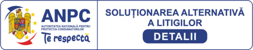

Soluționarea Alternativă a Litigiilor
SAL este un mecanism pus la dispoziția consumatorilor prin Autoritatea Națională pentru Protecția Consumatorilor. Acesta urmărește soluționarea imparțială și amiabilă a unui litigiu fără parcurgerea imediată a unui proces în instanță.
Înainte de cererea SAL
Te încurajăm să ne contactezi mai întâi și să ne oferi informațiile necesare: produsul, data livrării, descrierea problemei și fotografii. Vom încerca să găsim o soluție directă și legală.
Cum accesezi portalul
Poți consulta informațiile și depune o cerere pe platforma electronică oficială ANPC SAL.
Important: vechea platformă europeană SOL a fost închisă la 20 iulie 2025. Din acest motiv, site-ul indică platforma națională ANPC SAL actuală.